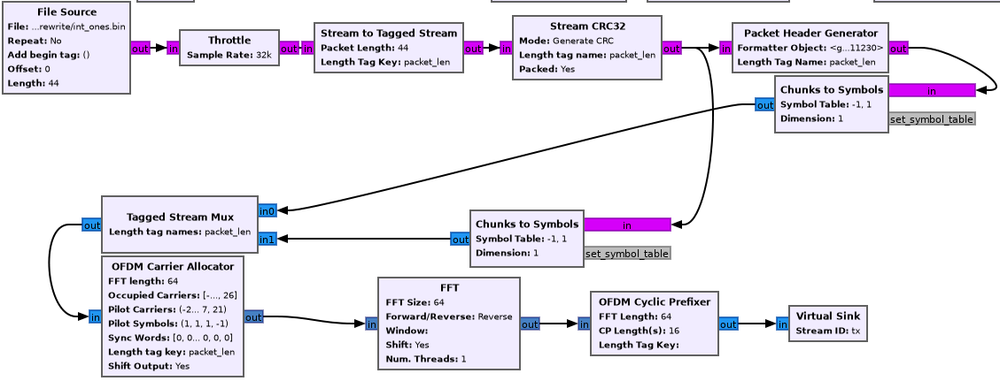

In depth explanation of the OFDM implementation in GNURadio
Table of Contents
1. Introduction
GNURadio (GR) provides the OFDM Transmitter and OFDM Receiver
blocks to do orthogonal frequency division multiplexing. These blocks
are hierarchical, meaning that they're really composed of other (C++)
blocks internally. Indeed, both of these blocks are written in python
and simply describe connections between blocks. Because of this, there's a
great deal of implementation detail in the source code of these blocks
that is poorly documented in a simple and clear manner. This article
is an in-depth explanation of the OFDM implementation.
I'll shortly be working on updating the GR wiki and block documentation with these notes, but for now they'll stay here. What I won't be covering in depth is the mathematical basis for much of OFDM, instead these ideas can mostly be found on my wiki. I'll try to include a bare minimum here, and link to wiki articles when possible.
1.1. High level introduction to the OFDM idea
Orthogonal frequency division multiplexing is a multi-carrier scheme that's fairly widely used today, especially in WiFi and LTE.
This multi-carrier property just means that instead of transmitting a signal at one frequency (on one "carrier wave"), we transmit on many sub-carriers spaced apart by a little bit of bandwidth.
The core of the idea that makes OFDM special is the technique by which it makes these subcarriers independent (or, orthogonal), which boils down to computing the IFFT of the signal at the reciever and adding a cyclic prefix in between each set (determined by the size of the FFT) of data pieces. I go into much more detail about why this leads to interesting properties in another article I wrote about it.
2. Transmission
The following is a mostly faithful reconstruction of the transmission
scheme given in gr-digital-python/digital/ofdm_txrx.py.

For the sake of the narrative, we'll take it step by step and introduce the parameters to each block as we get there.
2.1. File source
For the purposes of this whole example, let's assume we want to transmit some number of bits, say 16 of them (we'll see why this number is convenient shortly).
For simplicity, let's say all these bytes are just the integer 1, so
You might generate a file to be used with this block with a bash call
to like printf '\xFF\xFF' > test", but pick your poison.
The length on the file source should be set to 2, since it reads data in bytes.
2.2. Stream to tagged stream
Classic streams in GR are just streams of bytes with no information or grouping. We however, would like to group the bytes together in a flexible way (meaning that we should be able to increase the size of a group).
The technique for doing this is attaching a "tag" every \(n\) samples, here 2 as mentioned. This tag says nothing but the length of the group following it. Really the reason this is necessary is so that C++ programs can allocate memory for a buffer large enough to do processing on that group, before recieving the data. See the GRwiki article on tagged streams. Stream tags are quite flexible, and we'll see them again for other uses. Fundamentally, tags are just a pair of key and value, where both are polymorphic-types (PMT's).
2.3. Stream CRC32
This block simply adds the CRC32 error-detection code to the end of the data. The reasons why CRC32 tends to be pretty good for OFDM bursts, and the implementation of the algorithm are explained pretty well by this wikipedia article.
The CRC32, as the name suggests, adds 32 bits (\(\frac{32}{8} = 4\) bytes) to our data, bringing the length up to 6 bytes.
2.4. Header generator
The data coming out of the tagged stream block splits here. We'll talk about the header generation first.
Let's take some time to talk poorly-named jargon for a second:
- OFDM frame/burst
- a set of some number (as many as necessary) of OFDM symbols and other stuff
- OFDM symbol
- a set of \(n\) (determined by the size of the FFT) complex symbols
- complex symbol
- an atomic piece of encoded data. for more information about why you can hold signals as complex numbers, see my article on quadrature signals.
The "other stuff" included in an OFDM frame are 3 extra OFDM symbols, the header OFDM symbol, and two "sync words" that are known by the reciever as part of some standard. We'll see the generation of the sync words and their usage for time and frequency synchronization later on in the reception section.
The header OFDM symbol (before modulation) contains three pieces of data:
- 12 bits for the length of the packet (here, 48 (including the 4 extra from the CRC))
- 12 bits for the header number, which is incremented after every packet (modulo xFFFF)
- 8 bits of CRC computed from a combination of the above numbers.
We must encode these bits one way or another, but the number of bytes (and thus complex symbols) used to encode these bits depends on the modulation scheme used, and in particular, the number of bits we can encode in a specific complex symbol.
Classically, in the standard, we encode everything in the header with BPSK, binary phase shift keying, which essentially encodes one bit in the phase of one complex symbol, and gives all-real complex symbols.
With BPSK, each byte will only have its LSB representing actual data. With QPSK, which can encode 2 bits per complex symbol, the lowest 2 bits in the byte represent data, and so on. The reason we have to do this is because next, we will be mapping bytes to complex symbols, but it wouldn't do to pack a byte full of data when we can only encode 1 of the 8 bits into a symbol to transmit.
In sum, at worst (BPSK), we have 32 bytes (although, each byte only has one bit of data) of header data, but we will send this as one OFDM symbol on it's own. In IEEE jargon this is either called the header or the SIGNAL symbol, and in practice also includes information like data rate (can't just waste 20 bits, can we?).
2.5. Repack bits
Typically the CRC32 block is routed through a "Repack bits" block before being converted to symbols.
The incoming data is usually a byte array that is packed full of data, but we want each byte to represent just as many bits as we can encode into a single complex symbol.
If we're using BPSK, then each byte should only have one bit of data. The repack bits block takes a \(k\) and \(l\), and converts bytes containing \(k\) bits of data into bytes containing \(l\) bits of data. Thus for BPSK, we'd use \(k = 8, l = 1\), and for QPSK we might use \(k = 8, l = 2\).
At \((8, 1)\), a byte array containing [FF] is transformed into [1 1
1 1 1 1 1 1] Similarly, A byte containing [0F] becomes [0 0 0 0 1
1 1 1], where each of these 0s and 1s aren't bits, but bytes with
the top 7 bits off.
2.6. Chunks to Symbols
Here we convert each byte into a complex symbol. This is done via a symbol table, or a constellation. I briefly discuss the ideas behind constellation encoding here, but the high level idea is to map each bit, or sequence of bits, to a "location" on the complex plane, or a pair of real and complex co-ordinates, so they can be transmitted as a quadrature signal. This is possible since \(\sin\) and \(\cos\) form orthogonal bases for the signal space.
Constellations are typically quite specific. Points on the constellation should be as far apart as possible, in order to minimize the ambiguity when decoding any particular recieved complex symbol. However, the distance of a constellation point from the origin affects the energy (magnitude of the resulting symbol) required to transmit, and so this must be considered as well.
Here we use binary-phase-shift-keying for the payload's encoding, although the IEEE standard suggests QPSK for a higher data transmission rate. In BPSK, resulting complex symbols are real, and the real part is 1 if the bit is 1, and -1 if the bit is 0.
In gnuradio, the BPSK constellation points are obtained as:
from gnuradio import digital header_mod = digital.constellation_bpsk() points = header_mod.points()
2.7. Tagged stream mux
This block combines two streams in order. The output is the first stream followed by the second stream.
2.8. OFDM carrier allocator
Now, we have a long stream of complex symbols, (80, to be exact), and we must transform them into vectors of what to load into each frequency. Assuming that we are using 64 subcarriers (IEEE standard), we expect to produce a vector of \(n\) samples, which are each arrays of 64 complex numbers, where \(n\) is the number of OFDM symbols we're sending in the frame.
Here, we have one OFDM symbol for the header, one symbol for sync word 1, and another symbol for sync word 2, and one symbol for data and the CRC32 code. The structure of each sync word is given below.
In OFDM, although we get 64 subcarriers to transmit on, payload OFDM symbols only get 48.
The IEEE 802.11a standard suggests transmitting on subcarriers from -26 to +26, for a total of 52 subcarriers. That's what we'll use for now in our example. This subcarrier indexing is relative to some central carrier frequency at index 0. The frequency spacing between subcarriers will be determined by the size of the FFT.
The bottom 6 and top 5 subcarriers are meant to be left empty according to the IEEE standard. This is generally to prevent excessive out-of-band emission. It's also convenient when applying a low-pass filter to the signal.
Additionally, the zero-subcarrier is left null. This is again a measure for hardware devices that have interference at the carrier frequency, specifically synchrodynes which have an oscillator tuned to the carrier frequency.
Finally, the pilot subcarriers, (-21, -7, 7, 21) contain receiver-known data as well. These sequences are used for a wide variety of purposes, and it's protocol dependent. Here, the pilot sequence is (1, 1, 1, -1), one symbol per pilot tone.
It's important to note that the preamble (combination of the sync words) don't follow these rules. The sync words transmit non-pilot sequences on the pilot subcarriers.
The reason why we chose to transmit 2 bytes is now clear. After CRC, we have 6 bytes, and \(6 * 8 = 48\) bits, if you use BPSK to encode one bit to one complex symbol, this is exactly as many as we can fit into one OFDM symbol. Using QPSK as the IEEE standard suggests would let you fit twice as much data.
The operation of the OFDM carrier allocator block is now fairly simple to explain.
- Copy each sync word into the output buffer (each are 64 complex symbols) straight
- For each of the header and data symbols (remember, we muxed them)
- Copy a symbol to each of the occupied carriers
- Fill in the pilot carriers with the pilot sequence
- Return the size of the vector to ensure it's formatted correctly
Because we have 2 sync words, 1 header, and 1 data symbol, we'll have 4 OFDM symbols in a single vector sample [see below for a clarification on this] now.
2.8.1. Sync words in OFDM synchronization
The idea of "sync words" are fundamental to wireless communication. The receiver is only able to equalize for environmental and interference conditions (the "channel"), when there is some data transmitted that is known to both the transmitter and receiver.
Sync words may also be used for detecting when the packet starts at all, as well as compensating for a constant (across subcarriers) frequency offset, the carrier frequency offset.
Typically, these sync words have some clever properties that make doing these easier. I'll outline the generation of each of these sync words briefly.
- Sync word 1
Sync word 1 is generally used for timing estimation (i.e when does our data start), which is sent first since you can only pick up data following it.
In 1997, Schmidl & Cox proposed using a sync word that had identical first and second halves. What is actually in these halves isn't so relevant, but they should have constant transmit energy.
From a property of the discrete fourier transform, the classical way to produce a time-domain signal that is duplicated around its center is to take the DFT of a signal that has real-only data on even frequencies (assuming a symmetric fft frequency ordering scheme starting from \(-k\) and ending at \(k-1\) inclusive). To be more specific, this holds when the signal has hermitian symmetry and the right parity. In the interest of space, I'm not including the proof here, but it can be found in 8.6.4 (p. 653) of Discrete-Time Signal Processing by Oppenheim & Schafer.
We can produce this sync word with:
list(map(lambda x: np.sqrt(2) * np.random.choice([-1, 1]) if (x in oc[0]+[-21, -7, 7, 21] and x % 2 == 0) else 0, range(-32, 32)))
where
oc[0]is a list of occupied carriers. - Sync word 2
Sync word 2 is used for channel estimation and coarse frequency offset. Computed via
list(map(lambda x: np.random.choice([-1, 1]) if x in oc[0]+[-21, -7, 7, 21] else 0, range(-32, 32)))
Note that the second sync word indeed has higher magnitudes, and thus transmit energy, but it will prove to be useful during reception.
2.8.2. Streams vs vectors
In GR, streams and vectors are the two main types of data passing techniques. Streams pass each sample individually, whereas vectors contain some number of samples in a vector.
In this way, blocks that operate on vectors (notably, the FFT block), should be thought of as doing a parallel computation.
2.9. FFT
This block simply applies the inverse discrete fourier transform in parallel (operates on a vector) to each of the 64-length OFDM symbols.
The output will therefore also be 64-length time-domain OFDM symbols, although the meaning of the word is now slightly different. The inverse fourier transform is used here, expecting that the resulting time domain signal will be cyclically prefixed.
2.10. OFDM cyclic prefixer
This block applied a cyclic prefix to each item in the vector input. A cyclic prefix is simply prefixing a block by some number of time-domain symbols from the end of a 64-length block.
The cyclic prefix is the core of the OFDM idea, and has deep implications for equalization at the receiver. I'd recommend my article on OFDM, or the paper "Wireless multicarrier communications" by Wang & Giannakis (2000).
The high level idea, skipping a fair bit of linear algebra, is that adding the cyclic prefix turns the linear convolution of the data with the channel (since the output of a linearly time invariant channel is determined via linear convolution) into a circular convolution. As it would turn out, the matrix that does circular convolution turns out to be diagonalizable in the Fourier basis, which implies a removal of inter-symbol interference by pre and post multiplying by the inverse DFT and DFT matrices, as well as cheap equalization techniques.
As for the implementation of the cyclic prefixer block, I'll only explain it in a bit of a limited scope. The block has two operating modes, one meant to be used before the carrier allocator in the stream domain "packet mode", and the other meant to be used after the FFT, in so called "freewheeling mode." I'll only cover the second, which is enabled by not specifying a length tag.
Additionally, the block supports the application of the raised cosine pulse shaping filter parametrized by a rolloff length, but this is typically unnecessary and is indeed set to a default of 0.